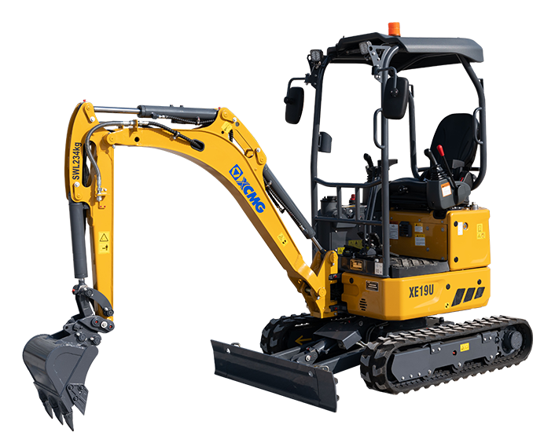

狭窄空间 / 市政庭院
工况特点：看重窄机身、短尾回转、低运输尺寸和边角贴墙作业能力。
有益配置：可伸缩底盘、动臂偏摆、推土铲偏摆、后视安全配置对庭院和市政抢修更有价值。
领先：三一 SY18U 91.5 分；XCMG 53.1 分，第 7。
配置贡献领先：XCMG XE19U 7 分；XCMG 配置项按实际标选配测算。
按统一挖掘机竞品对标方法，把参数、标选配、典型工况、配置贡献、差距来源和提升模拟拆开展示。结论均从用户提供 Excel 原始值计算，不用纯主观判断替代数据。

工况特点：看重窄机身、短尾回转、低运输尺寸和边角贴墙作业能力。
有益配置：可伸缩底盘、动臂偏摆、推土铲偏摆、后视安全配置对庭院和市政抢修更有价值。
领先：三一 SY18U 91.5 分；XCMG 53.1 分，第 7。
配置贡献领先：XCMG XE19U 7 分；XCMG 配置项按实际标选配测算。
工况特点：核心是下挖深度、挖掘半径、斗杆挖掘力和长斗杆覆盖能力。
有益配置：长斗杆、AUX 管路和动臂斗杆防爆阀有助于深沟、管线和基础作业。
领先：山猫 E20 73.8 分；XCMG 61.7 分，第 3。
配置贡献领先：卡特 301.7 CR 13.6 分；XCMG 配置项按实际标选配测算。
工况特点：看卸载高度、挖掘力、液压流量、回转和行走响应。
有益配置：经济模式、自动怠速、推土铲浮动和快换管路影响短循环油耗与辅助动作效率。
领先：卡特 301.8 85 分；XCMG 53.1 分，第 5。
配置贡献领先：卡特 301.7 CR 8.8 分；XCMG 配置项按实际标选配测算。
工况特点：重点是液压系统流量、压力和 AUX 管路覆盖。
有益配置：AUX1/AUX2、卸油管路、流量保持和快换管路决定破碎锤、拇指夹、螺旋钻等属具适配效率。
领先：卡特 301.7 CR 76.3 分；XCMG 63.4 分，第 4。
配置贡献领先：现代 HX17AZ 23 分；XCMG 配置项按实际标选配测算。
工况特点：关注接地比压、履带宽度、牵引、爬坡和起吊能力。
有益配置：副配重、推土铲浮动、驾驶室安全和行走报警可以增强坡地和吊装边界。
领先：现代 HX17AZ 70.4 分；XCMG 44.8 分，第 6。
配置贡献领先：卡特 301.7 CR 7 分；XCMG 配置项按实际标选配测算。
工况特点：看运输尺寸、油耗管理、易用性、安全提醒和远程管理。
有益配置：自动怠速、自动停机、远程信息处理、报警灯、行走报警和驾驶舒适配置直接影响租赁周转。
领先：卡特 301.8 65 分；XCMG 25.5 分，第 11。
配置贡献领先：卡特 301.8 39.2 分；XCMG 配置项按实际标选配测算。
对标对象：总体排名第一的参照产品是 卡特 301.7 CR；单项追赶不只看整机排名，重点拆到 最大挖掘高度、回转压力、最大卸载高度、AUX1压力 等具体指标。
硬参数差距：
配置差距：
| 产品 | 总体 | 工况 | 参数 | 配置 |
|---|---|---|---|---|
| 卡特 301.7 CR | 61.5 | 62.1 | 59.3 | 63.4 |
| 卡特 301.8 | 58.8 | 56.8 | 59.4 | 62.7 |
| 三一 SY18U | 55.2 | 61.6 | 60.3 | 31.4 |
| 山猫 E20 | 47.1 | 53.9 | 53.2 | 21.1 |
| XCMG XE19U | 47.1 | 51.4 | 55.8 | 23.1 |
| 现代 HX17AZ | 44.3 | 45 | 45.4 | 40.9 |
| 沃尔沃 ECR18E | 34.3 | 34.8 | 30 | 39.4 |
| 久保田 U17-5 | 33 | 35 | 29.5 | 33.5 |
| 迪尔 17P | 32 | 37.8 | 33 | 16.2 |
| 斗山 DX17Z-7 | 31.6 | 34.1 | 38.3 | 15 |
| 久保田 KX018 | 30.6 | 32.1 | 33.8 | 21.9 |
点击雷达图例可多选品牌进行对比；再次点击已选品牌可取消，全部取消后恢复全品牌展示。
工况特点：看重窄机身、短尾回转、低运输尺寸和边角贴墙作业能力。
有益配置：可伸缩底盘、动臂偏摆、推土铲偏摆、后视安全配置对庭院和市政抢修更有价值。
领先：三一 SY18U 91.5 分；XCMG 53.1 分，第 7。
配置贡献领先：XCMG XE19U 7 分；XCMG 配置项按实际标选配测算。
工况特点：核心是下挖深度、挖掘半径、斗杆挖掘力和长斗杆覆盖能力。
有益配置：长斗杆、AUX 管路和动臂斗杆防爆阀有助于深沟、管线和基础作业。
领先：山猫 E20 73.8 分；XCMG 61.7 分，第 3。
配置贡献领先：卡特 301.7 CR 13.6 分；XCMG 配置项按实际标选配测算。
工况特点：看卸载高度、挖掘力、液压流量、回转和行走响应。
有益配置：经济模式、自动怠速、推土铲浮动和快换管路影响短循环油耗与辅助动作效率。
领先：卡特 301.8 85 分；XCMG 53.1 分，第 5。
配置贡献领先：卡特 301.7 CR 8.8 分；XCMG 配置项按实际标选配测算。
工况特点：重点是液压系统流量、压力和 AUX 管路覆盖。
有益配置：AUX1/AUX2、卸油管路、流量保持和快换管路决定破碎锤、拇指夹、螺旋钻等属具适配效率。
领先：卡特 301.7 CR 76.3 分；XCMG 63.4 分，第 4。
配置贡献领先：现代 HX17AZ 23 分；XCMG 配置项按实际标选配测算。
工况特点：关注接地比压、履带宽度、牵引、爬坡和起吊能力。
有益配置：副配重、推土铲浮动、驾驶室安全和行走报警可以增强坡地和吊装边界。
领先：现代 HX17AZ 70.4 分；XCMG 44.8 分，第 6。
配置贡献领先：卡特 301.7 CR 7 分；XCMG 配置项按实际标选配测算。
工况特点：看运输尺寸、油耗管理、易用性、安全提醒和远程管理。
有益配置：自动怠速、自动停机、远程信息处理、报警灯、行走报警和驾驶舒适配置直接影响租赁周转。
领先：卡特 301.8 65 分；XCMG 25.5 分，第 11。
配置贡献领先：卡特 301.8 39.2 分；XCMG 配置项按实际标选配测算。
工况特点：看重窄机身、短尾回转、低运输尺寸和边角贴墙作业能力。
有益配置：可伸缩底盘、动臂偏摆、推土铲偏摆、后视安全配置对庭院和市政抢修更有价值。
| 类型 | 关键项 | 权重 |
|---|---|---|
| 参数 | 整机运输宽度 | 18% |
| 参数 | 整机运输长度 | 12% |
| 参数 | 尾部回转半径 | 24% |
| 参数 | 动臂偏摆（左/右） | 18% |
| 配置 | 行走报警 | 4% |
| 配置 | 报警灯 | 3% |
| 指标/配置 | 类型 | 权重 | 对工况影响 | XCMG XE19U | 卡特 301.7 CR | 卡特 301.8 | 迪尔 17P | 山猫 E20 | 久保田 U17-5 | 久保田 KX018 | 沃尔沃 ECR18E | 现代 HX17AZ | 斗山 DX17Z-7 | 三一 SY18U |
|---|---|---|---|---|---|---|---|---|---|---|---|---|---|---|
| 整机运输宽度 | 参数 | 18% | 越窄越适合入户、园林和人行道受限空间。 | 990/130033.3分贡献 6 · 有效数据 | 990-130033.3分贡献 6 · 有效数据 | 990-130033.3分贡献 6 · 有效数据 | 980-1280100分贡献 18 · 有效数据 | 980-1360100分贡献 18 · 有效数据 | 990-130033.3分贡献 6 · 有效数据 | 990-130033.3分贡献 6 · 有效数据 | 995-13520分贡献 0 · 有效数据 | 994-12906.7分贡献 1.2 · 有效数据 | 990-130033.3分贡献 6 · 有效数据 | 980/1350100分贡献 18 · 有效数据 |
| 整机运输长度 | 参数 | 12% | 短车身转场和狭小现场调头更灵活。 | 356055.4分贡献 6.6 · 有效数据 | 362034.6分贡献 4.2 · 有效数据 | 37200分贡献 0 · 有效数据 | 350076.1分贡献 9.1 · 有效数据 | 368811.1分贡献 1.3 · 有效数据 | 355058.8分贡献 7.1 · 有效数据 | 37103.5分贡献 0.4 · 有效数据 | 3431100分贡献 12 · 有效数据 | 353165.4分贡献 7.8 · 有效数据 | 352866.4分贡献 8 · 有效数据 | 351570.9分贡献 8.5 · 有效数据 |
| 尾部回转半径 | 参数 | 24% | 尾扫越小越不容易碰墙、碰车和碰围挡。 | 67592.9分贡献 22.3 · 有效数据 | 65098.8分贡献 23.7 · 有效数据 | 99517.6分贡献 4.2 · 有效数据 | 68091.8分贡献 22 · 有效数据 | /-分贡献 - · 缺失 | 65098.8分贡献 23.7 · 有效数据 | 10700分贡献 0 · 有效数据 | 68889.9分贡献 21.6 · 有效数据 | 645100分贡献 24 · 有效数据 | 645100分贡献 24 · 有效数据 | 67592.9分贡献 22.3 · 有效数据 |
| 动臂偏摆（左/右） | 参数 | 18% | 越能贴边开沟、贴墙清底，狭窄空间收益越高。 | 60/500分贡献 0 · 有效数据 | 65/5020分贡献 3.6 · 有效数据 | 65/5020分贡献 3.6 · 有效数据 | 70/5040分贡献 7.2 · 有效数据 | /-分贡献 - · 缺失 | 63/5844分贡献 7.9 · 有效数据 | 75/60100分贡献 18 · 有效数据 | /-分贡献 - · 缺失 | /-分贡献 - · 缺失 | 69/4412分贡献 2.2 · 有效数据 | /-分贡献 - · 缺失 |
| 行走报警 | 配置 | 4% | 人车混行环境降低安全风险。 | 标配100分贡献 4 · 标配 | 选配60分贡献 2.4 · 选配 | 选配60分贡献 2.4 · 选配 | 标配100分贡献 4 · 标配 | /0分贡献 0 · 无配置 | 选配60分贡献 2.4 · 选配 | 选配60分贡献 2.4 · 选配 | 选配60分贡献 2.4 · 选配 | 标配100分贡献 4 · 标配 | 标配100分贡献 4 · 标配 | 标配100分贡献 4 · 标配 |
| 报警灯 | 配置 | 3% | 市政施工和租赁场景提高周边可感知性。 | 标配100分贡献 3 · 标配 | /0分贡献 0 · 无配置 | /0分贡献 0 · 无配置 | -0分贡献 0 · 无配置 | /0分贡献 0 · 无配置 | /0分贡献 0 · 无配置 | /0分贡献 0 · 无配置 | 选配60分贡献 1.8 · 选配 | 选配60分贡献 1.8 · 选配 | /0分贡献 0 · 无配置 | 标配100分贡献 3 · 标配 |
本工况建议以 三一 SY18U 作为第一参照；XCMG 需要重点看 动臂偏摆（左/右）、整机运输宽度、整机运输长度。
配置项暂未发现明确弱项，重点维护现有标配口径并补齐竞品资料。
工况特点：核心是下挖深度、挖掘半径、斗杆挖掘力和长斗杆覆盖能力。
有益配置：长斗杆、AUX 管路和动臂斗杆防爆阀有助于深沟、管线和基础作业。
| 类型 | 关键项 | 权重 |
|---|---|---|
| 参数 | 最大挖掘深度 | 28% |
| 参数 | 最大挖掘半径 | 14% |
| 参数 | 最大地面挖掘半径 | 12% |
| 参数 | 斗杆挖掘力 | 12% |
| 参数 | 标配斗杆 | 8% |
| 配置 | 长斗杆 | 8% |
| 配置 | 动臂斗杆防爆阀 | 6% |
| 配置 | AUX1管路 | 4% |
| 指标/配置 | 类型 | 权重 | 对工况影响 | XCMG XE19U | 卡特 301.7 CR | 卡特 301.8 | 迪尔 17P | 山猫 E20 | 久保田 U17-5 | 久保田 KX018 | 沃尔沃 ECR18E | 现代 HX17AZ | 斗山 DX17Z-7 | 三一 SY18U |
|---|---|---|---|---|---|---|---|---|---|---|---|---|---|---|
| 最大挖掘深度 | 参数 | 28% | 深度决定基础沟槽和管线施工覆盖范围。 | 252083.5分贡献 23.4 · 有效数据 | 235040.5分贡献 11.3 · 有效数据 | 237045.6分贡献 12.8 · 有效数据 | 21900分贡献 0 · 有效数据 | 254589.9分贡献 25.2 · 有效数据 | 229025.3分贡献 7.1 · 有效数据 | 238048.1分贡献 13.5 · 有效数据 | 223411.1分贡献 3.1 · 有效数据 | 224012.7分贡献 3.5 · 有效数据 | 224012.7分贡献 3.5 · 有效数据 | 2585100分贡献 28 · 有效数据 |
| 最大挖掘半径 | 参数 | 14% | 半径越大，站位不变时覆盖面越宽。 | 4055100分贡献 14 · 有效数据 | 397065.3分贡献 9.1 · 有效数据 | 387024.5分贡献 3.4 · 有效数据 | 38100分贡献 0 · 有效数据 | /-分贡献 - · 缺失 | 388028.6分贡献 4 · 有效数据 | 392044.9分贡献 6.3 · 有效数据 | /-分贡献 - · 缺失 | 391040.8分贡献 5.7 · 有效数据 | 391040.8分贡献 5.7 · 有效数据 | /-分贡献 - · 缺失 |
| 最大地面挖掘半径 | 参数 | 12% | 平面沟槽连续开挖效率更高。 | 399540分贡献 4.8 · 有效数据 | 390020.5分贡献 2.5 · 有效数据 | 38000分贡献 0 · 有效数据 | /-分贡献 - · 缺失 | 4287100分贡献 12 · 有效数据 | 38204.1分贡献 0.5 · 有效数据 | 386012.3分贡献 1.5 · 有效数据 | 392124.8分贡献 3 · 有效数据 | 38204.1分贡献 0.5 · 有效数据 | 38204.1分贡献 0.5 · 有效数据 | 413568.8分贡献 8.3 · 有效数据 |
| 斗杆挖掘力 | 参数 | 12% | 深挖末端破土和清底能力。 | 1052.5分贡献 6.3 · 有效数据 | 11.9100分贡献 12 · 有效数据 | 11.385分贡献 10.2 · 有效数据 | 8.617.5分贡献 2.1 · 有效数据 | 11.590分贡献 10.8 · 有效数据 | 8.720分贡献 2.4 · 有效数据 | 8.27.5分贡献 0.9 · 有效数据 | 7.90分贡献 0 · 有效数据 | 927.5分贡献 3.3 · 有效数据 | 9.130分贡献 3.6 · 有效数据 | 8.310分贡献 1.2 · 有效数据 |
| 标配斗杆 | 参数 | 8% | 斗杆长度影响天然深挖覆盖。 | 9508.7分贡献 0.7 · 有效数据 | 96013分贡献 1 · 有效数据 | 96013分贡献 1 · 有效数据 | 9300分贡献 0 · 有效数据 | /-分贡献 - · 缺失 | 9508.7分贡献 0.7 · 有效数据 | /-分贡献 - · 缺失 | 9508.7分贡献 0.7 · 有效数据 | /-分贡献 - · 缺失 | 103043.5分贡献 3.5 · 有效数据 | 1160100分贡献 8 · 有效数据 |
| 长斗杆 | 配置 | 8% | 深沟和管线施工直接增益配置。 | 选配1120mm60分贡献 4.8 · 选配 | 选配1160mm60分贡献 4.8 · 选配 | 选配1160mm60分贡献 4.8 · 选配 | -0分贡献 0 · 无配置 | /0分贡献 0 · 无配置 | /0分贡献 0 · 无配置 | /0分贡献 0 · 无配置 | 选配 115060分贡献 4.8 · 选配 | /0分贡献 0 · 无配置 | 选配 123060分贡献 4.8 · 选配 | /0分贡献 0 · 无配置 |
| 动臂斗杆防爆阀 | 配置 | 6% | 基础施工和吊装附近作业的安全配置。 | /0分贡献 0 · 无配置 | 选配60分贡献 3.6 · 选配 | 选配60分贡献 3.6 · 选配 | /0分贡献 0 · 无配置 | /0分贡献 0 · 无配置 | /0分贡献 0 · 无配置 | /0分贡献 0 · 无配置 | 选配60分贡献 3.6 · 选配 | /0分贡献 0 · 无配置 | /0分贡献 0 · 无配置 | /0分贡献 0 · 无配置 |
| AUX1管路 | 配置 | 4% | 便于搭配夯实、破碎和清沟属具。 | 标配100分贡献 4 · 标配 | 标配100分贡献 4 · 标配 | 标配100分贡献 4 · 标配 | 标配100分贡献 4 · 标配 | 标配100分贡献 4 · 标配 | 标配100分贡献 4 · 标配 | 标配100分贡献 4 · 标配 | 标配100分贡献 4 · 标配 | 标配100分贡献 4 · 标配 | 标配100分贡献 4 · 标配 | 标配100分贡献 4 · 标配 |
| AUX2管路 | 配置 | 2% | 旋转类属具扩展能力。 | /0分贡献 0 · 无配置 | 选配60分贡献 1.2 · 选配 | 选配60分贡献 1.2 · 选配 | /0分贡献 0 · 无配置 | 选配60分贡献 1.2 · 选配 | /0分贡献 0 · 无配置 | /0分贡献 0 · 无配置 | /0分贡献 0 · 无配置 | 标配100分贡献 2 · 标配 | /0分贡献 0 · 无配置 | /0分贡献 0 · 无配置 |
本工况建议以 山猫 E20 作为第一参照；XCMG 需要重点看 标配斗杆、最大地面挖掘半径、斗杆挖掘力。
工况特点：看卸载高度、挖掘力、液压流量、回转和行走响应。
有益配置：经济模式、自动怠速、推土铲浮动和快换管路影响短循环油耗与辅助动作效率。
| 类型 | 关键项 | 权重 |
|---|---|---|
| 参数 | 最大卸载高度 | 18% |
| 参数 | 铲斗挖掘力 | 13% |
| 参数 | 斗杆挖掘力 | 8% |
| 参数 | 系统流量 | 14% |
| 参数 | 发动机净功率 | 10% |
| 参数 | 发动机总功率 | 8% |
| 参数 | 行走速度（低速/高速） | 7% |
| 参数 | 回转速度 | 7% |
| 指标/配置 | 类型 | 权重 | 对工况影响 | XCMG XE19U | 卡特 301.7 CR | 卡特 301.8 | 迪尔 17P | 山猫 E20 | 久保田 U17-5 | 久保田 KX018 | 沃尔沃 ECR18E | 现代 HX17AZ | 斗山 DX17Z-7 | 三一 SY18U |
|---|---|---|---|---|---|---|---|---|---|---|---|---|---|---|
| 最大卸载高度 | 参数 | 18% | 影响能否顺利装车和越过车厢。 | 245517.9分贡献 3.2 · 有效数据 | 245016.7分贡献 3 · 有效数据 | 256043分贡献 7.7 · 有效数据 | 251031分贡献 5.6 · 有效数据 | 2799100分贡献 18 · 有效数据 | 247021.5分贡献 3.9 · 有效数据 | 23800分贡献 0 · 有效数据 | 244415.3分贡献 2.7 · 有效数据 | 267069.2分贡献 12.5 · 有效数据 | 267069.2分贡献 12.5 · 有效数据 | 247522.7分贡献 4.1 · 有效数据 |
| 铲斗挖掘力 | 参数 | 13% | 装料、切土和短循环满斗能力。 | 1646.3分贡献 6 · 有效数据 | 18.482.1分贡献 10.7 · 有效数据 | 19.6100分贡献 13 · 有效数据 | 1646.3分贡献 6 · 有效数据 | 18.380.6分贡献 10.5 · 有效数据 | 15.843.3分贡献 5.6 · 有效数据 | 1646.3分贡献 6 · 有效数据 | 12.90分贡献 0 · 有效数据 | 1646.3分贡献 6 · 有效数据 | 16.350.7分贡献 6.6 · 有效数据 | 16.655.2分贡献 7.2 · 有效数据 |
| 斗杆挖掘力 | 参数 | 8% | 连续挖装时保持切入力。 | 1052.5分贡献 4.2 · 有效数据 | 11.9100分贡献 8 · 有效数据 | 11.385分贡献 6.8 · 有效数据 | 8.617.5分贡献 1.4 · 有效数据 | 11.590分贡献 7.2 · 有效数据 | 8.720分贡献 1.6 · 有效数据 | 8.27.5分贡献 0.6 · 有效数据 | 7.90分贡献 0 · 有效数据 | 927.5分贡献 2.2 · 有效数据 | 9.130分贡献 2.4 · 有效数据 | 8.310分贡献 0.8 · 有效数据 |
| 系统流量 | 参数 | 14% | 复合动作速度与液压响应。 | 50.668.4分贡献 9.6 · 有效数据 | 66100分贡献 14 · 有效数据 | 66100分贡献 14 · 有效数据 | 2x19.2+10.983.9分贡献 0.5 · 有效数据 | /-分贡献 - · 缺失 | 2x17.3+10.40分贡献 0 · 有效数据 | 2x17.3+10.50分贡献 0 · 有效数据 | 3434.3分贡献 4.8 · 有效数据 | 2x17.30分贡献 0 · 有效数据 | 2x17.30分贡献 0 · 有效数据 | 66100分贡献 14 · 有效数据 |
| 发动机净功率 | 参数 | 10% | 连续循环中的动力储备。 | 15.289.8分贡献 9 · 有效数据 | 15.7100分贡献 10 · 有效数据 | 15.7100分贡献 10 · 有效数据 | 10.80分贡献 0 · 有效数据 | /-分贡献 - · 缺失 | 11.310.2分贡献 1 · 有效数据 | 11.616.3分贡献 1.6 · 有效数据 | 11.820.4分贡献 2 · 有效数据 | 11.922.4分贡献 2.2 · 有效数据 | 11.922.4分贡献 2.2 · 有效数据 | 13.657.1分贡献 5.7 · 有效数据 |
| 发动机总功率 | 参数 | 8% | 动力系统基础能力。 | /-分贡献 - · 缺失 | 16.1100分贡献 8 · 有效数据 | 16.1100分贡献 8 · 有效数据 | /-分贡献 - · 缺失 | 11.20分贡献 0 · 有效数据 | 1216.3分贡献 1.3 · 有效数据 | 1216.3分贡献 1.3 · 有效数据 | 1216.3分贡献 1.3 · 有效数据 | 12.118.4分贡献 1.5 · 有效数据 | 12.118.4分贡献 1.5 · 有效数据 | 14.669.4分贡献 5.6 · 有效数据 |
| 行走速度（低速/高速） | 参数 | 7% | 场内短距离转场效率。 | 2.2/4.277.8分贡献 5.4 · 有效数据 | 2.9/4.4100分贡献 7 · 有效数据 | 2.9/4.4100分贡献 7 · 有效数据 | 2.4/4.277.8分贡献 5.4 · 有效数据 | 2.1/4.277.8分贡献 5.4 · 有效数据 | 2.3/4.4100分贡献 7 · 有效数据 | 2.2/455.6分贡献 3.9 · 有效数据 | 1.8/3.50分贡献 0 · 有效数据 | 2.2/4.166.7分贡献 4.7 · 有效数据 | 2.2/4.166.7分贡献 4.7 · 有效数据 | 3/455.6分贡献 3.9 · 有效数据 |
| 回转速度 | 参数 | 7% | 短循环挖装回转效率。 | 10100分贡献 7 · 有效数据 | 9.877.8分贡献 5.4 · 有效数据 | 9.877.8分贡献 5.4 · 有效数据 | /-分贡献 - · 缺失 | /-分贡献 - · 缺失 | 9.433.3分贡献 2.3 · 有效数据 | 9.10分贡献 0 · 有效数据 | 9.544.4分贡献 3.1 · 有效数据 | 9.166.7分贡献 0.5 · 有效数据 | 9.211.1分贡献 0.8 · 有效数据 | 10100分贡献 7 · 有效数据 |
| 自动怠速 | 配置 | 4% | 等待装车和短暂停顿时降低怠速油耗。 | /0分贡献 0 · 无配置 | 标配100分贡献 4 · 标配 | 标配100分贡献 4 · 标配 | /0分贡献 0 · 无配置 | 选配60分贡献 2.4 · 选配 | 标配100分贡献 4 · 标配 | 标配100分贡献 4 · 标配 | 选配60分贡献 2.4 · 选配 | /0分贡献 0 · 无配置 | /0分贡献 0 · 无配置 | 标配100分贡献 4 · 标配 |
| 推土铲浮动 | 配置 | 3% | 回填、整平、清底动作效率更高。 | /0分贡献 0 · 无配置 | 标配100分贡献 3 · 标配 | 标配100分贡献 3 · 标配 | /0分贡献 0 · 无配置 | 标配100分贡献 3 · 标配 | /0分贡献 0 · 无配置 | /0分贡献 0 · 无配置 | /0分贡献 0 · 无配置 | 标配100分贡献 3 · 标配 | /0分贡献 0 · 无配置 | /0分贡献 0 · 无配置 |
| 快换管路 | 配置 | 3% | 多属具切换减少停机时间。 | 选配60分贡献 1.8 · 选配 | 选配60分贡献 1.8 · 选配 | 选配60分贡献 1.8 · 选配 | 无，机械快换0分贡献 0 · 无配置 | 无，机械快换0分贡献 0 · 无配置 | 无，机械快换0分贡献 0 · 无配置 | 无，机械快换0分贡献 0 · 无配置 | 选配60分贡献 1.8 · 选配 | 标配100分贡献 3 · 标配 | /0分贡献 0 · 无配置 | 标配100分贡献 3 · 标配 |
本工况建议以 卡特 301.8 作为第一参照；XCMG 需要重点看 最大卸载高度、铲斗挖掘力、系统流量。
工况特点：重点是液压系统流量、压力和 AUX 管路覆盖。
有益配置：AUX1/AUX2、卸油管路、流量保持和快换管路决定破碎锤、拇指夹、螺旋钻等属具适配效率。
| 类型 | 关键项 | 权重 |
|---|---|---|
| 参数 | 系统流量 | 14% |
| 参数 | 工作压力 | 12% |
| 参数 | AUX1流量 | 14% |
| 参数 | AUX1压力 | 10% |
| 参数 | AUX2流量 | 8% |
| 参数 | AUX2压力 | 8% |
| 配置 | AUX1管路 | 10% |
| 配置 | AUX2管路 | 8% |
| 指标/配置 | 类型 | 权重 | 对工况影响 | XCMG XE19U | 卡特 301.7 CR | 卡特 301.8 | 迪尔 17P | 山猫 E20 | 久保田 U17-5 | 久保田 KX018 | 沃尔沃 ECR18E | 现代 HX17AZ | 斗山 DX17Z-7 | 三一 SY18U |
|---|---|---|---|---|---|---|---|---|---|---|---|---|---|---|
| 系统流量 | 参数 | 14% | 液压属具连续工作基础。 | 50.668.4分贡献 9.6 · 有效数据 | 66100分贡献 14 · 有效数据 | 66100分贡献 14 · 有效数据 | 2x19.2+10.983.9分贡献 0.5 · 有效数据 | /-分贡献 - · 缺失 | 2x17.3+10.40分贡献 0 · 有效数据 | 2x17.3+10.50分贡献 0 · 有效数据 | 3434.3分贡献 4.8 · 有效数据 | 2x17.30分贡献 0 · 有效数据 | 2x17.30分贡献 0 · 有效数据 | 66100分贡献 14 · 有效数据 |
| 工作压力 | 参数 | 12% | 破碎、夹持和钻孔属具输出能力。 | 25.3100分贡献 12 · 有效数据 | 24.590.4分贡献 10.8 · 有效数据 | 24.590.4分贡献 10.8 · 有效数据 | /-分贡献 - · 缺失 | /-分贡献 - · 缺失 | /-分贡献 - · 缺失 | /-分贡献 - · 缺失 | 170分贡献 0 · 有效数据 | 20.643.4分贡献 5.2 · 有效数据 | 20.643.4分贡献 5.2 · 有效数据 | 24.590.4分贡献 10.8 · 有效数据 |
| AUX1流量 | 参数 | 14% | 主属具回路供油能力。 | 45100分贡献 14 · 有效数据 | 3330.6分贡献 4.3 · 有效数据 | 3330.6分贡献 4.3 · 有效数据 | 29.912.7分贡献 1.8 · 有效数据 | 3013.3分贡献 1.9 · 有效数据 | 27.70分贡献 0 · 有效数据 | 27.70分贡献 0 · 有效数据 | 3013.3分贡献 1.9 · 有效数据 | 27.70分贡献 0 · 有效数据 | /-分贡献 - · 缺失 | 4071.1分贡献 10 · 有效数据 |
| AUX1压力 | 参数 | 10% | 主属具负载能力。 | 188.8分贡献 0.9 · 有效数据 | 24.537.6分贡献 3.8 · 有效数据 | 24.537.6分贡献 3.8 · 有效数据 | /-分贡献 - · 缺失 | 188.8分贡献 0.9 · 有效数据 | /-分贡献 - · 缺失 | /-分贡献 - · 缺失 | /-分贡献 - · 缺失 | 38.6100分贡献 10 · 有效数据 | /-分贡献 - · 缺失 | 160分贡献 0 · 有效数据 |
| AUX2流量 | 参数 | 8% | 旋转/夹持类辅回路能力。 | /-分贡献 - · 缺失 | 14100分贡献 8 · 有效数据 | 14100分贡献 8 · 有效数据 | /-分贡献 - · 缺失 | /-分贡献 - · 缺失 | /-分贡献 - · 缺失 | /-分贡献 - · 缺失 | /-分贡献 - · 缺失 | /-分贡献 - · 缺失 | /-分贡献 - · 缺失 | /-分贡献 - · 缺失 |
| AUX2压力 | 参数 | 8% | 辅回路属具稳定性。 | /-分贡献 - · 缺失 | 24.5100分贡献 8 · 有效数据 | 24.5100分贡献 8 · 有效数据 | /-分贡献 - · 缺失 | /-分贡献 - · 缺失 | /-分贡献 - · 缺失 | /-分贡献 - · 缺失 | /-分贡献 - · 缺失 | /-分贡献 - · 缺失 | /-分贡献 - · 缺失 | /-分贡献 - · 缺失 |
| AUX1管路 | 配置 | 10% | 破碎锤和常规属具基础配置。 | 标配100分贡献 10 · 标配 | 标配100分贡献 10 · 标配 | 标配100分贡献 10 · 标配 | 标配100分贡献 10 · 标配 | 标配100分贡献 10 · 标配 | 标配100分贡献 10 · 标配 | 标配100分贡献 10 · 标配 | 标配100分贡献 10 · 标配 | 标配100分贡献 10 · 标配 | 标配100分贡献 10 · 标配 | 标配100分贡献 10 · 标配 |
| AUX2管路 | 配置 | 8% | 旋转夹、拇指夹等复合属具更友好。 | /0分贡献 0 · 无配置 | 选配60分贡献 4.8 · 选配 | 选配60分贡献 4.8 · 选配 | /0分贡献 0 · 无配置 | 选配60分贡献 4.8 · 选配 | /0分贡献 0 · 无配置 | /0分贡献 0 · 无配置 | /0分贡献 0 · 无配置 | 标配100分贡献 8 · 标配 | /0分贡献 0 · 无配置 | /0分贡献 0 · 无配置 |
| 流量保持 | 配置 | 5% | 连续属具输出更稳定。 | /0分贡献 0 · 无配置 | 标配100分贡献 5 · 标配 | 标配100分贡献 5 · 标配 | /0分贡献 0 · 无配置 | /0分贡献 0 · 无配置 | 标配100分贡献 5 · 标配 | /0分贡献 0 · 无配置 | /0分贡献 0 · 无配置 | /0分贡献 0 · 无配置 | /0分贡献 0 · 无配置 | 标配100分贡献 5 · 标配 |
| 快换管路 | 配置 | 5% | 多属具场景减少切换时间。 | 选配60分贡献 3 · 选配 | 选配60分贡献 3 · 选配 | 选配60分贡献 3 · 选配 | 无，机械快换0分贡献 0 · 无配置 | 无，机械快换0分贡献 0 · 无配置 | 无，机械快换0分贡献 0 · 无配置 | 无，机械快换0分贡献 0 · 无配置 | 选配60分贡献 3 · 选配 | 标配100分贡献 5 · 标配 | /0分贡献 0 · 无配置 | 标配100分贡献 5 · 标配 |
本工况建议以 卡特 301.7 CR 作为第一参照；XCMG 需要重点看 AUX1压力、系统流量、AUX2管路。
工况特点：关注接地比压、履带宽度、牵引、爬坡和起吊能力。
有益配置：副配重、推土铲浮动、驾驶室安全和行走报警可以增强坡地和吊装边界。
| 类型 | 关键项 | 权重 |
|---|---|---|
| 参数 | 履带宽度 | 9% |
| 参数 | 接地比压 | 14% |
| 参数 | 最大牵引力 | 13% |
| 参数 | 爬坡能力 | 13% |
| 参数 | 地面正前方3m远处起吊能力（放下推土铲） | 18% |
| 参数 | 地面正前方3m远处起吊能力（抬起推土铲） | 12% |
| 参数 | 地面侧方3m远处起吊能力 | 12% |
| 配置 | 副配重 | 5% |
| 指标/配置 | 类型 | 权重 | 对工况影响 | XCMG XE19U | 卡特 301.7 CR | 卡特 301.8 | 迪尔 17P | 山猫 E20 | 久保田 U17-5 | 久保田 KX018 | 沃尔沃 ECR18E | 现代 HX17AZ | 斗山 DX17Z-7 | 三一 SY18U |
|---|---|---|---|---|---|---|---|---|---|---|---|---|---|---|
| 履带宽度 | 参数 | 9% | 宽履带降低陷车风险并提升侧向稳定性。 | 230100分贡献 9 · 有效数据 | 230100分贡献 9 · 有效数据 | 230100分贡献 9 · 有效数据 | 230100分贡献 9 · 有效数据 | 230100分贡献 9 · 有效数据 | 230100分贡献 9 · 有效数据 | 230100分贡献 9 · 有效数据 | 230100分贡献 9 · 有效数据 | 230100分贡献 9 · 有效数据 | 230100分贡献 9 · 有效数据 | 230100分贡献 9 · 有效数据 |
| 接地比压 | 参数 | 14% | 越低越适合软土、草地和回填土表面。 | 29.712.5分贡献 1.8 · 有效数据 | 27.9-3050分贡献 7 · 有效数据 | 26.8-29.672.9分贡献 10.2 · 有效数据 | 26.677.1分贡献 10.8 · 有效数据 | 306.3分贡献 0.9 · 有效数据 | 27.656.2分贡献 7.9 · 有效数据 | 25.5/26.2100分贡献 14 · 有效数据 | 28.439.6分贡献 5.5 · 有效数据 | 30.22.1分贡献 0.3 · 有效数据 | 30.30分贡献 0 · 有效数据 | 306.3分贡献 0.9 · 有效数据 |
| 最大牵引力 | 参数 | 13% | 坡地转场和湿软场地脱困能力。 | 21.4100分贡献 13 · 有效数据 | 18.464.3分贡献 8.4 · 有效数据 | 18.464.3分贡献 8.4 · 有效数据 | /-分贡献 - · 缺失 | /-分贡献 - · 缺失 | 14.113.1分贡献 1.7 · 有效数据 | 20.285.7分贡献 11.1 · 有效数据 | 130分贡献 0 · 有效数据 | /-分贡献 - · 缺失 | 13.910.7分贡献 1.4 · 有效数据 | 15.631分贡献 4 · 有效数据 |
| 爬坡能力 | 参数 | 13% | 坡地作业和上下车能力。 | 300分贡献 0 · 有效数据 | 300分贡献 0 · 有效数据 | 300分贡献 0 · 有效数据 | /-分贡献 - · 缺失 | /-分贡献 - · 缺失 | /-分贡献 - · 缺失 | /-分贡献 - · 缺失 | 300分贡献 0 · 有效数据 | 35100分贡献 13 · 有效数据 | 300分贡献 0 · 有效数据 | /-分贡献 - · 缺失 |
| 地面正前方3m远处起吊能力（放下推土铲） | 参数 | 18% | 放铲吊装代表稳定边界。 | /-分贡献 - · 缺失 | 938100分贡献 18 · 有效数据 | 81168.1分贡献 12.3 · 有效数据 | /-分贡献 - · 缺失 | /-分贡献 - · 缺失 | 5400分贡献 0 · 有效数据 | 67634.2分贡献 6.2 · 有效数据 | 59313.3分贡献 2.4 · 有效数据 | 86080.4分贡献 14.5 · 有效数据 | 84075.4分贡献 13.6 · 有效数据 | 77458.8分贡献 10.6 · 有效数据 |
| 地面正前方3m远处起吊能力（抬起推土铲） | 参数 | 12% | 无支撑状态下的保守吊装能力。 | 514.586.3分贡献 10.4 · 有效数据 | 3980分贡献 0 · 有效数据 | 533100分贡献 12 · 有效数据 | /-分贡献 - · 缺失 | /-分贡献 - · 缺失 | /-分贡献 - · 缺失 | /-分贡献 - · 缺失 | 46952.6分贡献 6.3 · 有效数据 | /-分贡献 - · 缺失 | 42016.3分贡献 2 · 有效数据 | 42520分贡献 2.4 · 有效数据 |
| 地面侧方3m远处起吊能力 | 参数 | 12% | 侧方吊装稳定性。 | 39421.6分贡献 2.6 · 有效数据 | 42240.5分贡献 4.9 · 有效数据 | 3620分贡献 0 · 有效数据 | /-分贡献 - · 缺失 | /-分贡献 - · 缺失 | 38515.5分贡献 1.9 · 有效数据 | 46770.9分贡献 8.5 · 有效数据 | 43448.6分贡献 5.8 · 有效数据 | 510100分贡献 12 · 有效数据 | 43045.9分贡献 5.5 · 有效数据 | 42542.6分贡献 5.1 · 有效数据 |
| 副配重 | 配置 | 5% | 提升尾部稳定性和吊装边界。 | /0分贡献 0 · 无配置 | 选配60分贡献 3 · 选配 | /0分贡献 0 · 无配置 | /0分贡献 0 · 无配置 | /0分贡献 0 · 无配置 | /0分贡献 0 · 无配置 | /0分贡献 0 · 无配置 | 选配60分贡献 3 · 选配 | /0分贡献 0 · 无配置 | /0分贡献 0 · 无配置 | /0分贡献 0 · 无配置 |
| 推土铲浮动 | 配置 | 4% | 整平和坡面贴合更容易。 | /0分贡献 0 · 无配置 | 标配100分贡献 4 · 标配 | 标配100分贡献 4 · 标配 | /0分贡献 0 · 无配置 | 标配100分贡献 4 · 标配 | /0分贡献 0 · 无配置 | /0分贡献 0 · 无配置 | /0分贡献 0 · 无配置 | 标配100分贡献 4 · 标配 | /0分贡献 0 · 无配置 | /0分贡献 0 · 无配置 |
本工况建议以 现代 HX17AZ 作为第一参照；XCMG 需要重点看 爬坡能力、接地比压、地面侧方3m远处起吊能力。
工况特点：看运输尺寸、油耗管理、易用性、安全提醒和远程管理。
有益配置：自动怠速、自动停机、远程信息处理、报警灯、行走报警和驾驶舒适配置直接影响租赁周转。
| 类型 | 关键项 | 权重 |
|---|---|---|
| 参数 | 整机运输宽度 | 12% |
| 参数 | 整机运输长度 | 10% |
| 参数 | 整机运输高度 | 8% |
| 参数 | 操作重量 | 8% |
| 参数 | 行走速度（低速/高速） | 8% |
| 配置 | 自动怠速 | 8% |
| 配置 | 自动停机 | 9% |
| 配置 | 远程信息处理系统 | 9% |
| 指标/配置 | 类型 | 权重 | 对工况影响 | XCMG XE19U | 卡特 301.7 CR | 卡特 301.8 | 迪尔 17P | 山猫 E20 | 久保田 U17-5 | 久保田 KX018 | 沃尔沃 ECR18E | 现代 HX17AZ | 斗山 DX17Z-7 | 三一 SY18U |
|---|---|---|---|---|---|---|---|---|---|---|---|---|---|---|
| 整机运输宽度 | 参数 | 12% | 拖车、仓库和门洞通过性。 | 990/130033.3分贡献 4 · 有效数据 | 990-130033.3分贡献 4 · 有效数据 | 990-130033.3分贡献 4 · 有效数据 | 980-1280100分贡献 12 · 有效数据 | 980-1360100分贡献 12 · 有效数据 | 990-130033.3分贡献 4 · 有效数据 | 990-130033.3分贡献 4 · 有效数据 | 995-13520分贡献 0 · 有效数据 | 994-12906.7分贡献 0.8 · 有效数据 | 990-130033.3分贡献 4 · 有效数据 | 980/1350100分贡献 12 · 有效数据 |
| 整机运输长度 | 参数 | 10% | 拖车装载和仓储占地。 | 356055.4分贡献 5.5 · 有效数据 | 362034.6分贡献 3.5 · 有效数据 | 37200分贡献 0 · 有效数据 | 350076.1分贡献 7.6 · 有效数据 | 368811.1分贡献 1.1 · 有效数据 | 355058.8分贡献 5.9 · 有效数据 | 37103.5分贡献 0.3 · 有效数据 | 3431100分贡献 10 · 有效数据 | 353165.4分贡献 6.5 · 有效数据 | 352866.4分贡献 6.6 · 有效数据 | 351570.9分贡献 7.1 · 有效数据 |
| 整机运输高度 | 参数 | 8% | 低矮通道和运输合规性。 | 24000分贡献 0 · 有效数据 | 230097.1分贡献 7.8 · 有效数据 | 230097.1分贡献 7.8 · 有效数据 | 238019.4分贡献 1.6 · 有效数据 | 2297100分贡献 8 · 有效数据 | 237029.1分贡献 2.3 · 有效数据 | 235048.5分贡献 3.9 · 有效数据 | 229899分贡献 7.9 · 有效数据 | 232077.7分贡献 6.2 · 有效数据 | 232077.7分贡献 6.2 · 有效数据 | 237029.1分贡献 2.3 · 有效数据 |
| 操作重量 | 参数 | 8% | 拖车级别和租赁客户自提门槛。 | 190028.6分贡献 2.3 · 有效数据 | 1790-191567.9分贡献 5.4 · 有效数据 | 1725-202991.1分贡献 7.3 · 有效数据 | 172092.9分贡献 7.4 · 有效数据 | 189032.1分贡献 2.6 · 有效数据 | 177075分贡献 6 · 有效数据 | 1700/1800100分贡献 8 · 有效数据 | 1700-1980100分贡献 8 · 有效数据 | 19800分贡献 0 · 有效数据 | 191025分贡献 2 · 有效数据 | 192519.6分贡献 1.6 · 有效数据 |
| 行走速度（低速/高速） | 参数 | 8% | 场内转场效率。 | 2.2/4.277.8分贡献 6.2 · 有效数据 | 2.9/4.4100分贡献 8 · 有效数据 | 2.9/4.4100分贡献 8 · 有效数据 | 2.4/4.277.8分贡献 6.2 · 有效数据 | 2.1/4.277.8分贡献 6.2 · 有效数据 | 2.3/4.4100分贡献 8 · 有效数据 | 2.2/455.6分贡献 4.4 · 有效数据 | 1.8/3.50分贡献 0 · 有效数据 | 2.2/4.166.7分贡献 5.3 · 有效数据 | 2.2/4.166.7分贡献 5.3 · 有效数据 | 3/455.6分贡献 4.4 · 有效数据 |
| 自动怠速 | 配置 | 8% | 降低怠速油耗和新手误操作成本。 | /0分贡献 0 · 无配置 | 标配100分贡献 8 · 标配 | 标配100分贡献 8 · 标配 | /0分贡献 0 · 无配置 | 选配60分贡献 4.8 · 选配 | 标配100分贡献 8 · 标配 | 标配100分贡献 8 · 标配 | 选配60分贡献 4.8 · 选配 | /0分贡献 0 · 无配置 | /0分贡献 0 · 无配置 | 标配100分贡献 8 · 标配 |
| 自动停机 | 配置 | 9% | 降低无效怠速、油耗和租赁客户使用成本。 | /0分贡献 0 · 无配置 | 标配100分贡献 9 · 标配 | 标配100分贡献 9 · 标配 | /0分贡献 0 · 无配置 | /0分贡献 0 · 无配置 | /0分贡献 0 · 无配置 | /0分贡献 0 · 无配置 | 选配60分贡献 5.4 · 选配 | /0分贡献 0 · 无配置 | /0分贡献 0 · 无配置 | /0分贡献 0 · 无配置 |
| 远程信息处理系统 | 配置 | 9% | 定位、工时、维保和资产管理。 | /0分贡献 0 · 无配置 | 选配60分贡献 5.4 · 选配 | 选配60分贡献 5.4 · 选配 | 选配60分贡献 5.4 · 选配 | /0分贡献 0 · 无配置 | 标配100分贡献 9 · 标配 | /0分贡献 0 · 无配置 | /0分贡献 0 · 无配置 | 标配100分贡献 9 · 标配 | /0分贡献 0 · 无配置 | /0分贡献 0 · 无配置 |
| 密码防盗 | 配置 | 5% | 租赁资产防盗。 | /0分贡献 0 · 无配置 | 选配60分贡献 3 · 选配 | 选配60分贡献 3 · 选配 | /0分贡献 0 · 无配置 | 否40分贡献 2 · 需确认 | /0分贡献 0 · 无配置 | /0分贡献 0 · 无配置 | 否40分贡献 2 · 需确认 | /0分贡献 0 · 无配置 | /0分贡献 0 · 无配置 | /0分贡献 0 · 无配置 |
| 一键启动 | 配置 | 4% | 多客户使用更方便。 | /0分贡献 0 · 无配置 | 选配60分贡献 2.4 · 选配 | 选配60分贡献 2.4 · 选配 | /0分贡献 0 · 无配置 | /0分贡献 0 · 无配置 | /0分贡献 0 · 无配置 | /0分贡献 0 · 无配置 | /0分贡献 0 · 无配置 | /0分贡献 0 · 无配置 | /0分贡献 0 · 无配置 | /0分贡献 0 · 无配置 |
| USB电源 | 配置 | 3% | 基础便利配置。 | /0分贡献 0 · 无配置 | /0分贡献 0 · 无配置 | 选配60分贡献 1.8 · 选配 | /0分贡献 0 · 无配置 | /0分贡献 0 · 无配置 | 标配100分贡献 3 · 标配 | /0分贡献 0 · 无配置 | /0分贡献 0 · 无配置 | /0分贡献 0 · 无配置 | /0分贡献 0 · 无配置 | /0分贡献 0 · 无配置 |
| 蓝牙收音机 | 配置 | 3% | 驾驶舒适性。 | /0分贡献 0 · 无配置 | /0分贡献 0 · 无配置 | 选配60分贡献 1.8 · 选配 | /0分贡献 0 · 无配置 | 否40分贡献 1.2 · 需确认 | /0分贡献 0 · 无配置 | /0分贡献 0 · 无配置 | /0分贡献 0 · 无配置 | /0分贡献 0 · 无配置 | /0分贡献 0 · 无配置 | /0分贡献 0 · 无配置 |
| 手机托 | 配置 | 3% | 租赁客户通用便利性。 | /0分贡献 0 · 无配置 | 标配100分贡献 3 · 标配 | 标配100分贡献 3 · 标配 | /0分贡献 0 · 无配置 | /0分贡献 0 · 无配置 | 标配100分贡献 3 · 标配 | 标配100分贡献 3 · 标配 | 标配100分贡献 3 · 标配 | /0分贡献 0 · 无配置 | /0分贡献 0 · 无配置 | /0分贡献 0 · 无配置 |
| 报警灯 | 配置 | 4% | 工地安全可视化。 | 标配100分贡献 4 · 标配 | /0分贡献 0 · 无配置 | /0分贡献 0 · 无配置 | -0分贡献 0 · 无配置 | /0分贡献 0 · 无配置 | /0分贡献 0 · 无配置 | /0分贡献 0 · 无配置 | 选配60分贡献 2.4 · 选配 | 选配60分贡献 2.4 · 选配 | /0分贡献 0 · 无配置 | 标配100分贡献 4 · 标配 |
| 行走报警 | 配置 | 4% | 人员密集场景安全提醒。 | 标配100分贡献 4 · 标配 | 选配60分贡献 2.4 · 选配 | 选配60分贡献 2.4 · 选配 | 标配100分贡献 4 · 标配 | /0分贡献 0 · 无配置 | 选配60分贡献 2.4 · 选配 | 选配60分贡献 2.4 · 选配 | 选配60分贡献 2.4 · 选配 | 标配100分贡献 4 · 标配 | 标配100分贡献 4 · 标配 | 标配100分贡献 4 · 标配 |
| 驾驶室冷暖空调 | 配置 | 4% | 租赁客户跨季节适用。 | /0分贡献 0 · 无配置 | /0分贡献 0 · 无配置 | 选配60分贡献 2.4 · 选配 | /0分贡献 0 · 无配置 | /0分贡献 0 · 无配置 | /0分贡献 0 · 无配置 | /0分贡献 0 · 无配置 | /0分贡献 0 · 无配置 | /0分贡献 0 · 无配置 | /0分贡献 0 · 无配置 | /0分贡献 0 · 无配置 |
本工况建议以 卡特 301.8 作为第一参照；XCMG 需要重点看 整机运输宽度、整机运输高度、操作重量。
| 类别 | 指标 | 单位 | XCMG XE19U | 卡特 301.7 CR | 卡特 301.8 | 迪尔 17P | 山猫 E20 | 久保田 U17-5 | 久保田 KX018 | 沃尔沃 ECR18E | 现代 HX17AZ | 斗山 DX17Z-7 | 三一 SY18U |
|---|---|---|---|---|---|---|---|---|---|---|---|---|---|
| 运输参数 | 操作重量 | kg | 1900 | 1790-1915 | 1725-2029 | 1720 | 1890 | 1770 | 1700/1800 | 1700-1980 | 1980 | 1910 | 1925 |
| 运输参数 | 整机运输宽度 | mm | 990/1300 | 990-1300 | 990-1300 | 980-1280 | 980-1360 | 990-1300 | 990-1300 | 995-1352 | 994-1290 | 990-1300 | 980/1350 |
| 运输参数 | 整机运输高度 | mm | 2400 | 2300 | 2300 | 2380 | 2297 | 2370 | 2350 | 2298 | 2320 | 2320 | 2370 |
| 运输参数 | 整机运输长度 | mm | 3560 | 3620 | 3720 | 3500 | 3688 | 3550 | 3710 | 3431 | 3531 | 3528 | 3515 |
| 接地参数 | 轨距 | mm | 760-1070 | 760-1070 | 760-1070 | 750-1050 | 750-1130 | 760-1070 | 760-1070 | 765-1122 | 764-1060 | 760-1070 | 750-1120 |
| 接地参数 | 轴距 | mm | 1230 | / | / | 1210 | / | 1230 | 1230 | / | 1230 | 1230 | 1220 |
| 接地参数 | 履带长度 | mm | 1564 | 1590 | 1590 | 1570 | / | 1580 | 1590 | 1620 | 1580 | 1580 | 1585 |
| 接地参数 | 履带宽度 | mm | 230 | 230 | 230 | 230 | 230 | 230 | 230 | 230 | 230 | 230 | 230 |
| 工作参数 | 最大挖掘高度 | mm | 3420 | 3430 | 3550 | 3540 | / | 3510 | 3460 | 3442 | 3730 | 3730 | 3550 |
| 工作参数 | 最大卸载高度 | mm | 2455 | 2450 | 2560 | 2510 | 2799 | 2470 | 2380 | 2444 | 2670 | 2670 | 2475 |
| 工作参数 | 最大挖掘深度 | mm | 2520 | 2350 | 2370 | 2190 | 2545 | 2290 | 2380 | 2234 | 2240 | 2240 | 2585 |
| 工作参数 | 最大挖掘半径 | mm | 4055 | 3970 | 3870 | 3810 | / | 3880 | 3920 | / | 3910 | 3910 | / |
| 工作参数 | 最大地面挖掘半径 | mm | 3995 | 3900 | 3800 | / | 4287 | 3820 | 3860 | 3921 | 3820 | 3820 | 4135 |
| 工作参数 | 尾部回转半径 | mm | 675 | 650 | 995 | 680 | / | 650 | 1070 | 688 | 645 | 645 | 675 |
| 动力 | 发动机总功率 | kW | / | 16.1 | 16.1 | / | 11.2 | 12 | 12 | 12 | 12.1 | 12.1 | 14.6 |
| 动力 | 发动机净功率 | kW | 15.2 | 15.7 | 15.7 | 10.8 | / | 11.3 | 11.6 | 11.8 | 11.9 | 11.9 | 13.6 |
| 工作装置 | 标配斗杆 | mm | 950 | 960 | 960 | 930 | / | 950 | / | 950 | / | 1030 | 1160 |
| 工作装置 | 标配动臂 | mm | 1828 | 1780 | 1850 | 1820 | / | / | / | / | 1750 | 1750 | 1770 |
| 液压系统 | 液压系统 | 类别 | / | 负载敏感 | 负载敏感 | 三泵 | 负载敏感 | 三泵 | 三泵 | / | / | / | 负载敏感 |
| 液压系统 | 系统流量 | L/min | 50.6 | 66 | 66 | 2x19.2+10.98 | / | 2x17.3+10.4 | 2x17.3+10.5 | 34 | 2x17.3 | 2x17.3 | 66 |
| 液压系统 | 工作压力 | MPa | 25.3 | 24.5 | 24.5 | / | / | / | / | 17 | 20.6 | 20.6 | 24.5 |
| 液压系统 | 行走压力 | MPa | 25.3 | 24.5 | 24.5 | / | / | / | / | / | 20.6 | 20.6 | 24.5 |
| 液压系统 | 回转压力 | MPa | 11 | 14.7 | 14.7 | / | / | / | / | / | 16.2 | 13.2 | 16.2 |
| 液压系统 | AUX1流量 | L/min | 45 | 33 | 33 | 29.9 | 30 | 27.7 | 27.7 | 30 | 27.7 | / | 40 |
| 液压系统 | AUX1压力 | Mpa | 18 | 24.5 | 24.5 | / | 18 | / | / | / | 38.6 | / | 16 |
| 液压系统 | AUX2流量 | L/min | / | 14 | 14 | / | / | / | / | / | / | / | / |
| 液压系统 | AUX2压力 | Mpa | / | 24.5 | 24.5 | / | / | / | / | / | / | / | / |
| 行走 | 行走速度（低速/高速） | km/h | 2.2/4.2 | 2.9/4.4 | 2.9/4.4 | 2.4/4.2 | 2.1/4.2 | 2.3/4.4 | 2.2/4 | 1.8/3.5 | 2.2/4.1 | 2.2/4.1 | 3/4 |
| 行走 | 最大牵引力 | kN | 21.4 | 18.4 | 18.4 | / | / | 14.1 | 20.2 | 13 | / | 13.9 | 15.6 |
| 行走 | 接地比压 | kPa | 29.7 | 27.9-30 | 26.8-29.6 | 26.6 | 30 | 27.6 | 25.5/26.2 | 28.4 | 30.2 | 30.3 | 30 |
| 行走 | 爬坡能力 | ° | 30 | 30 | 30 | / | / | / | / | 30 | 35 | 30 | / |
| 回转 | 回转速度 | rpm | 10 | 9.8 | 9.8 | / | / | 9.4 | 9.1 | 9.5 | 9.16 | 9.2 | 10 |
| 回转 | 动臂偏摆（左/右） | ° | 60/50 | 65/50 | 65/50 | 70/50 | / | 63/58 | 75/60 | / | / | 69/44 | / |
| 挖掘力 | 铲斗挖掘力 | kN | 16 | 18.4 | 19.6 | 16 | 18.3 | 15.8 | 16 | 12.9 | 16 | 16.3 | 16.6 |
| 挖掘力 | 斗杆挖掘力 | kN | 10 | 11.9 | 11.3 | 8.6 | 11.5 | 8.7 | 8.2 | 7.9 | 9 | 9.1 | 8.3 |
| 起吊能力 | 地面正前方3m远处起吊能力（放下推土铲） | kg | / | 938 | 811 | / | / | 540 | 676 | 593 | 860 | 840 | 774 |
| 起吊能力 | 地面正前方3m远处起吊能力（抬起推土铲） | kg | 514.5 | 398 | 533 | / | / | / | / | 469 | / | 420 | 425 |
| 起吊能力 | 地面侧方3m远处起吊能力 | kg | 394 | 422 | 362 | / | / | 385 | 467 | 434 | 510 | 430 | 425 |
| 类别 | 配置 | 单位 | XCMG XE19U | 卡特 301.7 CR | 卡特 301.8 | 迪尔 17P | 山猫 E20 | 久保田 U17-5 | 久保田 KX018 | 沃尔沃 ECR18E | 现代 HX17AZ | 斗山 DX17Z-7 | 三一 SY18U |
|---|---|---|---|---|---|---|---|---|---|---|---|---|---|
| 发动机 | 自动怠速 | 配置 | / | 标配 | 标配 | / | 选配 | 标配 | 标配 | 选配 | / | / | 标配 |
| 发动机 | 自动停机 | 配置 | / | 标配 | 标配 | / | / | / | / | 选配 | / | / | / |
| 液压系统 | 手柄行走 | 配置 | / | 标配 | 标配 | / | / | / | / | / | / | / | / |
| 液压系统 | 动臂斗杆防爆阀 | 配置 | / | 选配 | 选配 | / | / | / | / | 选配 | / | / | / |
| 液压系统 | AUX1管路 | 配置 | 标配 | 标配 | 标配 | 标配 | 标配 | 标配 | 标配 | 标配 | 标配 | 标配 | 标配 |
| 液压系统 | AUX1换向阀 | 配置 | / | / | / | / | / | 标配 | 标配 | / | 标配 | / | / |
| 液压系统 | AUX2管路 | 配置 | / | 选配 | 选配 | / | 选配 | / | / | / | 标配 | / | / |
| 液压系统 | 流量保持 | 配置 | / | 标配 | 标配 | / | / | 标配 | / | / | / | / | 标配 |
| 液压系统 | 快换管路 | 配置 | 选配 | 选配 | 选配 | 无，机械快换 | 无，机械快换 | 无，机械快换 | 无，机械快换 | 选配 | 标配 | / | 标配 |
| 驾驶环境 | 是否有驾驶室版本 | 配置 | / | 否 | 是 | 否 | 是 | 否 | 是 | 是 | / | / | 否 |
| 驾驶环境 | 驾驶室冷暖空调 | 配置 | / | / | 选配 | / | / | / | / | / | / | / | / |
| 驾驶环境 | 密码防盗 | 配置 | / | 选配 | 选配 | / | 否 | / | / | 否 | / | / | / |
| 驾驶环境 | 一键启动 | 配置 | / | 选配 | 选配 | / | / | / | / | / | / | / | / |
| 驾驶环境 | USB电源 | 配置 | / | / | 选配 | / | / | 标配 | / | / | / | / | / |
| 驾驶环境 | 蓝牙收音机 | 配置 | / | / | 选配 | / | 否 | / | / | / | / | / | / |
| 驾驶环境 | 悬浮座椅 | 配置 | / | 选配 | 驾驶室标配 驾驶棚选配 | 标配 | / | 标配 | 标配 | 标配 | 标配 | / | 标配 |
| 驾驶环境 | 手机托 | 配置 | / | 标配 | 标配 | / | / | 标配 | 标配 | 标配 | / | / | / |
| 电器系统 | 报警灯 | 配置 | 标配 | / | / | - | / | / | / | 选配 | 选配 | / | 标配 |
| 电器系统 | 行走报警 | 配置 | 标配 | 选配 | 选配 | 标配 | / | 选配 | 选配 | 选配 | 标配 | 标配 | 标配 |
| 电器系统 | 远程信息处理系统 | 配置 | / | 选配 | 选配 | 选配 | / | 标配 | / | / | 标配 | / | / |
| 工装底盘 | 长斗杆 | 配置 | 选配1120mm | 选配1160mm | 选配1160mm | - | / | / | / | 选配 1150 | / | 选配 1230 | / |
| 工装底盘 | 推土铲浮动 | 配置 | / | 标配 | 标配 | / | 标配 | / | / | / | 标配 | / | / |
| 工装底盘 | 副配重 | 配置 | / | 选配 | / | / | / | / | / | 选配 | / | / | / |